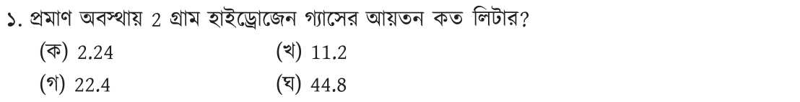
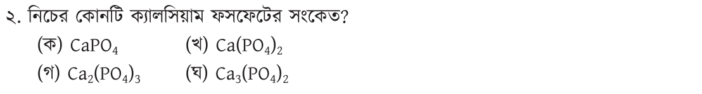
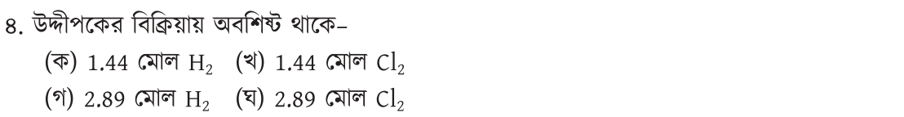
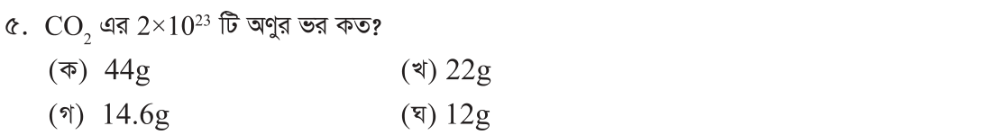
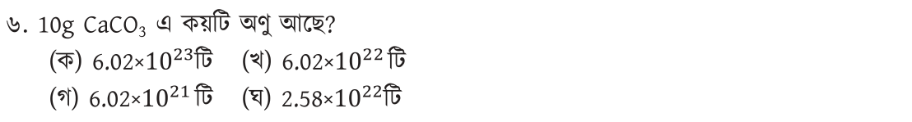
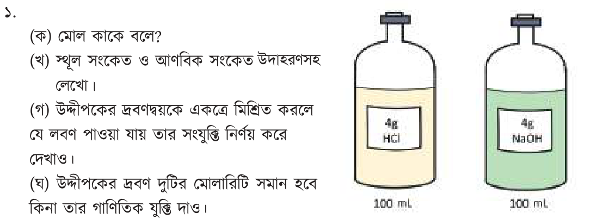
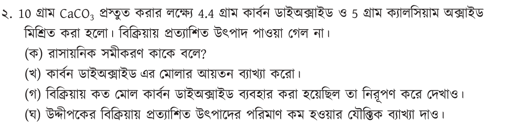

MCQ 1 · বই পৃ. 140

সম্পাদনাযোগ্য প্রতিলিপি (মূল ছবিই চূড়ান্ত রেফারেন্স)
প্রমাণ অবস্থায় 2 গ্রাম হাইড্রোজেন গ্যাসের আয়তন কত লিটার?
ক) 2.24
খ) 11.2
গ) 22.4
ঘ) 44.8
উত্তর/নম্বরমান: এই সোর্স পাতায় নেই; নিজের থেকে যোগ করা হয়নি।

প্রমাণ অবস্থায় 2 গ্রাম হাইড্রোজেন গ্যাসের আয়তন কত লিটার?
ক) 2.24
খ) 11.2
গ) 22.4
ঘ) 44.8
উত্তর/নম্বরমান: এই সোর্স পাতায় নেই; নিজের থেকে যোগ করা হয়নি।

নিচের কোনটি ক্যালসিয়াম ফসফেটের সংকেত?
ক) CaPO₄
খ) Ca(PO₄)₂
গ) Ca₂(PO₄)₃
ঘ) Ca₃(PO₄)₂
উত্তর/নম্বরমান: এই সোর্স পাতায় নেই; নিজের থেকে যোগ করা হয়নি।
মূলের যৌথ উদ্দীপক—এই প্রশ্নের অংশ, নতুন প্রশ্ন নয়।

উদ্দীপকে ব্যবহৃত ক্লোরিন পরমাণুর সংখ্যা কতটি?
ক) 1.27×10²⁴
খ) 2.54×10²⁴
গ) 6.02×10²³
ঘ) 6.36×10²³
উত্তর/নম্বরমান: এই সোর্স পাতায় নেই; নিজের থেকে যোগ করা হয়নি।
মূলের যৌথ উদ্দীপক—এই প্রশ্নের অংশ, নতুন প্রশ্ন নয়।

উদ্দীপকের বিক্রিয়ায় অবশিষ্ট থাকে–
ক) 1.44 মোল H₂
খ) 1.44 মোল Cl₂
গ) 2.89 মোল H₂
ঘ) 2.89 মোল Cl₂
উত্তর/নম্বরমান: এই সোর্স পাতায় নেই; নিজের থেকে যোগ করা হয়নি।

CO₂ এর 2×10²³ টি অণুর ভর কত?
ক) 44g
খ) 22g
গ) 14.6g
ঘ) 12g
উত্তর/নম্বরমান: এই সোর্স পাতায় নেই; নিজের থেকে যোগ করা হয়নি।

10g CaCO₃ এ কয়টি অণু আছে?
ক) 6.02×10²³টি
খ) 6.02×10²²টি
গ) 6.02×10²¹টি
ঘ) 2.58×10²²টি
উত্তর/নম্বরমান: এই সোর্স পাতায় নেই; নিজের থেকে যোগ করা হয়নি।

ক) মোল কাকে বলে?
খ) স্থূল সংকেত ও আণবিক সংকেত উদাহরণসহ লেখো।
গ) উদ্দীপকের দ্রবদ্বয়কে একত্রে মিশ্রিত করলে যে লবণ পাওয়া যায় তার সংযুতি নির্ণয় করে দেখাও।
ঘ) উদ্দীপকের দ্রবণ দুটির মোলারিটি সমান হবে কিনা তার গাণিতিক যুক্তি দাও।
উত্তর/নম্বরমান: এই সোর্স পাতায় নেই; নিজের থেকে যোগ করা হয়নি।

10 গ্রাম CaCO₃ প্রস্তুত করার লক্ষ্যে 4.4 গ্রাম কার্বন ডাইঅক্সাইড ও 5 গ্রাম ক্যালসিয়াম অক্সাইড মিশ্রিত করা হলো। বিক্রিয়ায় প্রত্যাশিত উৎপাদ পাওয়া গেল না।
ক) রাসায়নিক সমীকরণ কাকে বলে?
খ) কার্বন ডাইঅক্সাইড এর মোলার আয়তন-এর ব্যাখ্যা করো।
গ) বিক্রিয়ায় কত মোল কার্বন ডাইঅক্সাইড ব্যবহার করা হয়েছিল তা নির্ণয় করে দেখাও।
ঘ) উদ্দীপকের বিক্রিয়ায় প্রত্যাশিত উৎপাদের পরিমাণ কম হওয়ার যৌক্তিক ব্যাখ্যা দাও।
উত্তর/নম্বরমান: এই সোর্স পাতায় নেই; নিজের থেকে যোগ করা হয়নি।
Na₂CO₃ এর সেমিমোলার দ্রবণ ব্যাখ্যা করো।
উত্তর/নম্বরমান: এই সোর্স পাতায় নেই; নিজের থেকে যোগ করা হয়নি।
দ্রবণের মোলারিটি দ্রবের মোল সংখ্যার সাথে সম্পর্কিত ব্যাখ্যা করো।
উত্তর/নম্বরমান: এই সোর্স পাতায় নেই; নিজের থেকে যোগ করা হয়নি।
H₂SO₄ এর 100 মিলিলিটার ডেসিমোলার দ্রবণ কীভাবে তৈরি করা যায়? বর্ণনা করো।
উত্তর/নম্বরমান: এই সোর্স পাতায় নেই; নিজের থেকে যোগ করা হয়নি।